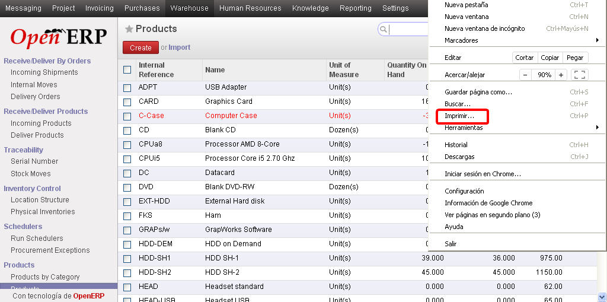
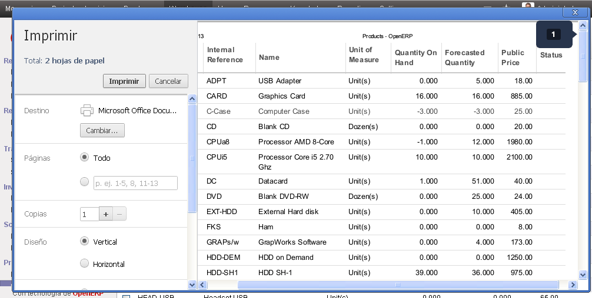

Usted podrá acceder a distintos reportes de la siguientes maneras:
1.En una determinada entidad, desde la vista lista, marcando varios documentos y utilizando los reportes definidos bajo el item Imprimir
2.En una determinada entidad, desde la vista formulado, utilizando los reportes definidos bajo el item Imprimir
3.Desde algunos items de menú que nos ofrecen un wizard para imprimir según distintos parámetros (ej. Reportes/Recursos humanos/Parte de horas del empleado)
4.Generar sus propios reportes utilizando el poder de los filtros y las distintas vistas. Este mecanismo se describe a continuación
Imprimir Vistas
En cualquiera de las pantallas del sistema podemos utilizar las función "imprimir" propia del navegador de internet que utilicemos (ya sea Chrome, Firefox u otro). Por ejemplo en Google Chrome debemos ir al menú principal y elegir la opción Imprimir.

Una vez que se haya hecho click accederemos a la siguiente vista previa de la futura impresión.
Podremos ver que el resultado es un reporte solo de los datos y no de las menús, sub menús y demás botones.
El gran poder de esta herramienta reside en combinarla con:
•Distintas vistas: Utilizando vistas, lista, formulario, kanban, etc., según la necesidad de información concreta.
•Agrupar: Agrupando por distintos criterios para organizar la información de la manera más conveniente.
•Filtros: filtrando por aquella información que querríamos exportar.
